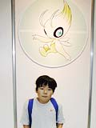

NINTENDOスペースワールド2000の目玉のひとつである、セレビィプレゼント。会場では、ときわたりポケモン、セレビィが配られているのです。セレビィとは、『ポケットモンスター金・銀』の251番目のポケモン。ゲームの中では絶対にゲットできない、前作で言うミュウのような幻のポケモンなんですね。本日も、セレビィプレゼント券をゲットした幸運なポケモントレーナーたちが、ドッと会場に押し寄せたのでした。
セレビィプレゼントマシーンに自分のカートリッジを差し込み、うれしそうにセレビィをゲットしていくトレーナーたち。そのなかの何人かをつかまえてインタビューしてみました。 |
|  『赤』バージョン以外のすべての『ポケモン』を持っているという強者トレーナーの鳴海憲政くん(11歳)は、埼玉県からお母さんと一緒にご来場。親子で仲良く『ポケモン』をプレイしているんだって。憲政くんの好きなポケモンは、スイクン。自分でゲットしたご自慢のスイクンを、うれしそうに見せてくれました。『ポケモン』が何より大好きな憲政くんは、インタビュー中もずっと『ポケモン』に夢中。念願のセレビィをゲットして、ゴキゲンのようでした。スイクン同様、セレビィもぜひかわいがってね。 |
| 横浜から来てくれた渡辺光さん(28歳)と村沢恵さん(28歳)は、『ポケモン』は『金・銀』が初めてというフレッシュなトレーナー。お気に入りのポケモンは、渡辺さんがピカチュウ、村沢さんがプクリンとのこと。2匹とも、超キュートなポケモンですね。セレビィプレゼントコーナーは、親と一緒に来た子供さんが圧倒的に多い中、このお二人のような、大人のトレーナーもチラホラ見られました。いいんです！ 『ポケモン』は大人がやっても面白いから困ってしまうんです！ |
| ちなみに、前回のミュウのときの親の名前は“マクハリ”でしたが、今回のセレビィの親の名前は、“スペース”と“ワールド”でした。みんな仲良くしてあげてね。 |